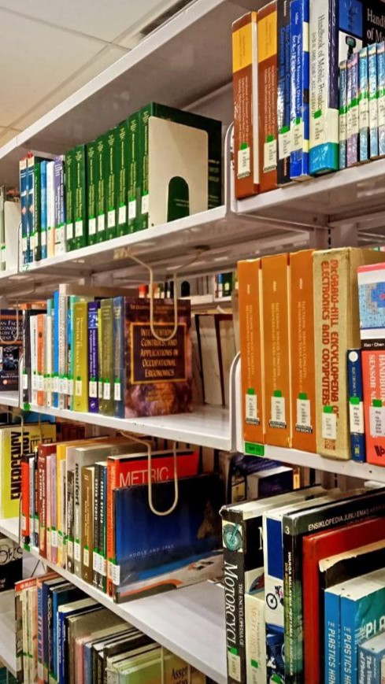

Travelling-Exploration: I have a passion for exploring places, whether independently or in a group. I believe that every exploration allows me to gain valuable knowledge. I got to learn about the culture, different environments, and get close to the nature of the place. For now, I have been traveling to several states in Malaysia such as Kuala Lumpur, Terengganu, and Johor. Each state has its background and uniqueness that brought Malaysia to become a developed country.
 Reading-Theraphy: Reading is another deep passion that I gradually realized I am fond of. I have read different types of books written by inspiring authors, including J.K. Rowling, Priscilla Caplan, and Stephen King. I tend to explore various types of genres, especially scientific and technological inventions. Reading habits bring a lot of new revelations that tickle my brain as well as change how I see the world's operations. Reading exploration enables people to acknowledge their interests and over time reading will become one of the fond therapy.
Participation-Volunteering-Active: Participation in activities became my other passion which I found really fun and enjoyable. I have been participating in many events at every level including middle school, high school, and university. Events like National-level conferences, library community , and grab knowledge events are examples of events that I enjoyed the most. This participation helps me to move out of my comfort zone and search for the better zone.